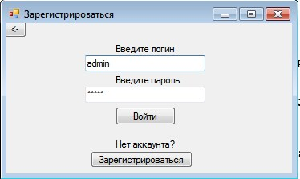
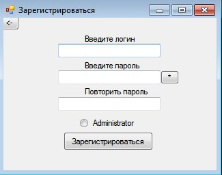
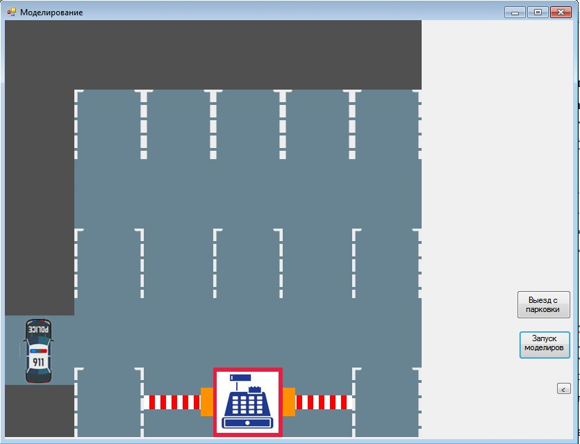
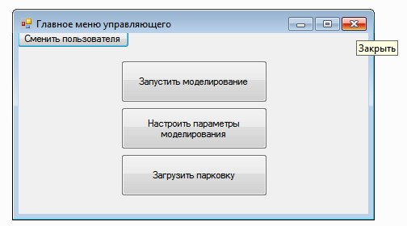

Система моделирование работы парковки используется для моделирования дорожного
движения и предлагает функции для моделирования парковок. Наша система- это мощный
инструмент для эффективного создания множества парковочных мест одновременно.
Таким образом можно в короткие сроки построить большие автостоянки
и визуализировать их работу.
Данная программная система включает в себя две роли: администратор, управляющий.
При запуске программной системы появляется окно, предоставляющее пользователю
возможность выбрать нужную роль, представленное на рисунке 1.
Рисунок 1 – Экранная форма выбора режима
Функции администратора:
задание размера парковки (по горизонтали, по вертикали);
составление/редактирование парковки;
выбор тарифа;
установление стоимости для тарифа;
сохранение парковки в файл;
загрузка парковки из файла;
Функции управляющего:
задание вероятности появления легкового автомобиля;
задание вероятности появления грузового автомобиля;
выбор потока (случайный, детерминированный);
настройка параметров потока;
настройка параметров потока;
загрузка парковки из файла;
выбор режима модельного времени.
Вне зависимости от выбора режима работы должна открыться экранная форма
авторизации в системе, содержащая поля для ввода логина и пароля, представленная на
рисунке 2.

Рисунок 2 – Экранная форма авторизации
После нажатия на кнопку «Войти» в случае корректно введенных данных произойдет
открытие экранной формы главного меню администратора (см. рисунок 3), либо
управляющего (см. рисунок 4) в зависимости от выбранного ранее режима работы.

Рисунок 3 – Экранная форма главного меню администратора

Рисунок 4 – Экранная форма главного меню управляющего
Если у пользователя еще нет аккаунта в системе, то после нажатия на кнопку
«Зарегистрироваться» произойдет открытие экранной формы регистрации в системе,
представленная на рисунке 5.

Рисунок 5 – Экранная форма регистрации
В случае корректно введенных данных (длина логина не менее 3 и не более 8
символов, длина пароля не менее 3 и не более 8 символов) и совпадении значений полей
«введите пароль» и «повторите пароль», после нажатия на кнопку «Зарегистрироваться»,
произойдет регистрации пользователя в системе и откроется главное меню
администратора(см. рисунок 3), либо главное меню управляющего (см. рисунок 4) в
зависимости от выбранного режима работы в главном меню приложения.
Данная система позволяет конструировать парковку с помощью шаблонов
проектирования, которые можно выбирать и размещать на свое усмотрение,
расстанавливая как парковочные места, так и объекты декора. Система позволяет
моделировать трафик движения машин с заданным интервалом движения.
На рисунке 20 приведена экранная форма главного меню администратора,
содержащий кнопки «создать/редактировать», «загрузить» и «настроить тариф», по
нажатию на которые открываются соответствующие экранные формы приложения. В
случае, если платная парковка уже создана в текущей сессии пользователя, то после
нажатия на кнопку «создать/редактировать» откроется экранная форма редактора
пространства парковки (см. рисунок 8), иначе экранная форма выбора тарифа, (см. рисунок 6).

Рисунок 6 – Экранная форма настройки тарифов платной парковки
На рисунке 6 приведена экранная форма настройки тарифа платной парковки,
содержащий два поля для ввода значений стоимости для легковых и грузовых автомобилей.
После нажатия на кнопку «Сохранить и перейти к редактору пространства» откроется
экранная форма редактора задания размеров пространства (см. рисунок 7).

Рисунок 7 – Экранная форма настройки тарифов платной парковки
На рисунке 7 приведен прототип экранной формы задания размеров пространства
платной парковки, содержащий два поля для ввода значений ширины и высоты. После
нажатия на кнопку «Создать» откроется экранная форма редактора пространства платной
парковки, которая приведена на рисунке 8.

Рисунок 8 – Экранная форма редактора пространства парковки
Размещение шаблонов на пространстве парковки происходит путем использования
функции «drag-and-drop». После нажатия на кнопку «очистить» происходит заполнение
нвсех ячеек пространства парковки шаблоном «пустое место».
По завершении работы с редактором, пользователь должен нажать на кнопку
«Сохранить» , после этого произойдет возврат на экран главного меню администратора.
Запустить моделирование возможно с главного меню управляющего (см. рисунок 4 в
разделе Авторизация). Сперва нужно загрузить файл с созданной парковкой, нажав
кнопку «Загрузить парковку» (см. рисунок 9).

Рисунок 9 – Загрузить парковку
При нажатии кнопки «Настройка параметров моделирования» будет открыта
форма настройки параметров моделирования (см. рисунок 10), содержащая поля для ввода
значений вероятностей заезда, появления легкового и грузового автомобилей. Две кнопки
типа «Radio button» для выбора типа поток (детерминированный, либо случайный). В
зависимости от выбора типа потока станут доступными для редактирования поля
параметров потока. Для детерминированного потока два поля для ввода значений
интервалов появления и стоянки автомобилей. Для случайного потока поле с
выпадающим списком законов распределения. В случае корректно введенных данных,
после нажатия на кнопку «Ок» произойдет сохранение введенных параметров и возврат к
экранной форме главного меню управляющего.

Рисунок 10 – Экранная форма настройки параметров
На рисунке 11 приведена экранная форма моделирования работы платной
парковки, содержащий кнопки для управления воспроизведением моделирования и
кнопку «Выйти», после нажатия на которую происходит возврат к экранной форме
главного меню управляющего.

Рисунок 11 – Экранная форма моделирования работы платной парковки
Выход из программы производится с помощью нажатия красного крестика (см. рисунок 12).

Рисунок 12 – Выход из прогрыммы
Система моделирования платной парковки 1.0 (х64).
20.12.2020
Copyright © Андрей Тышку, Власов Георгий, Киселева Снежана.
Система моделирования платной парковки не является свободно распространяемой программой.